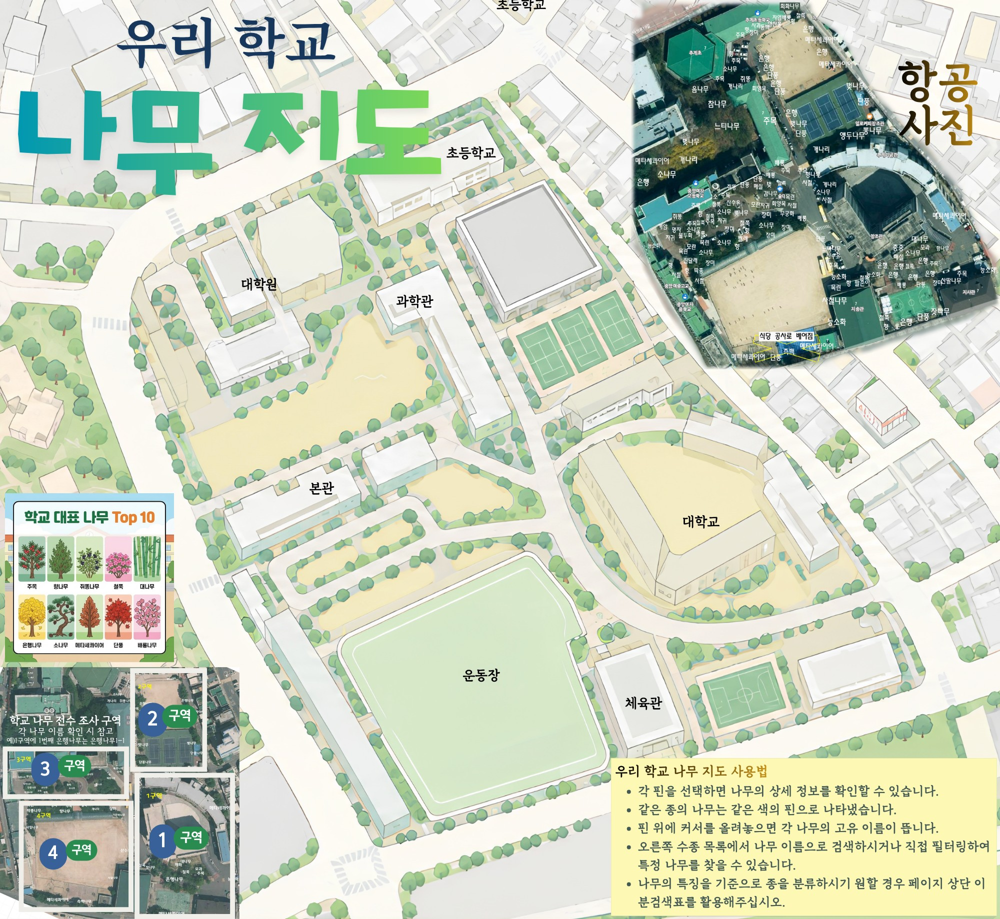
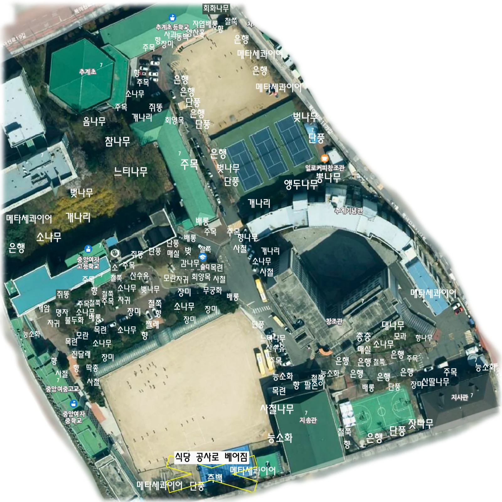
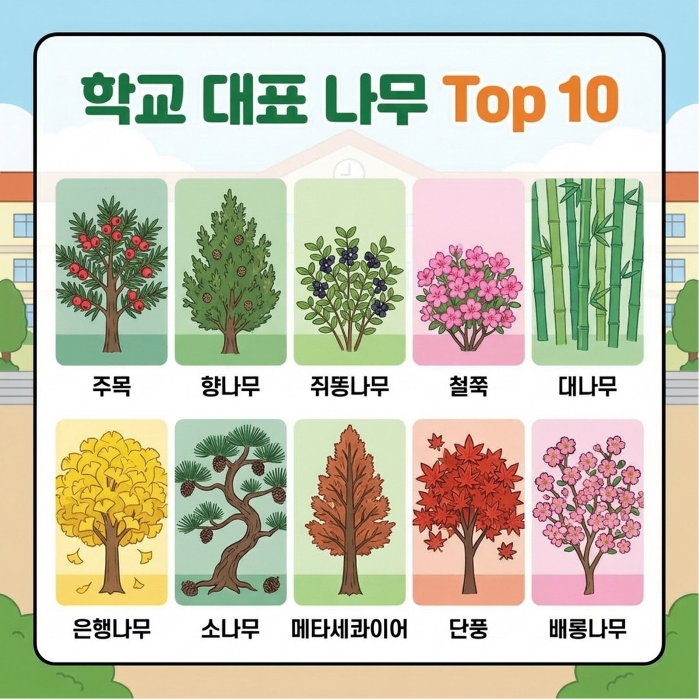
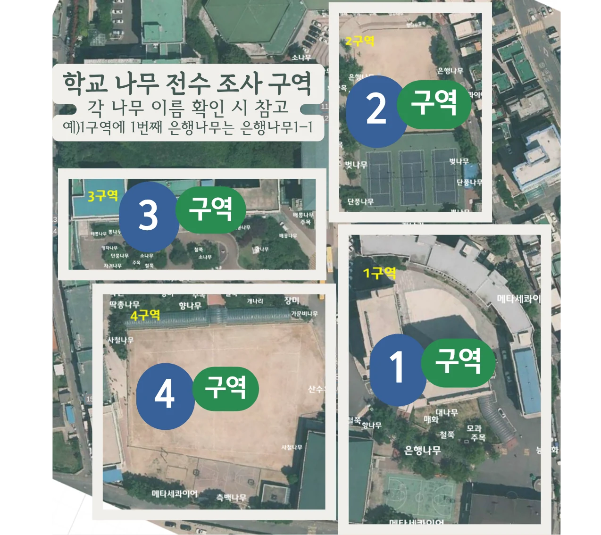

중앙여고 나무 지도
🔍 식물 검색하기
보기 모드
편집 모드
편집 모드입니다. 지도를 클릭해서 나무 핀을 추가하고, 핀을 끌어서 위치를 옮기세요.

우리 학교
나
무
지
도

항공
사진


우리 학교 나무 지도 사용법
각 핀을 선택하면 나무의 상세 정보를 확인할 수 있습니다.
같은 종의 나무는 같은 색의 핀으로 나타냈습니다.
핀 위에 커서를 올려놓으면 각 나무의 고유 이름이 뜹니다.
오른쪽 수종 목록에서 나무 이름으로 검색하시거나 직접 필터링하여 특정 나무를 찾을 수 있습니다.
나무의 특징을 기준으로 종을 분류하시기 원할 경우 페이지 상단 이분검색표를 활용해주십시오.
< >
+
−
⟲
나무 추가
이름
수종
삭제
취소
저장
×